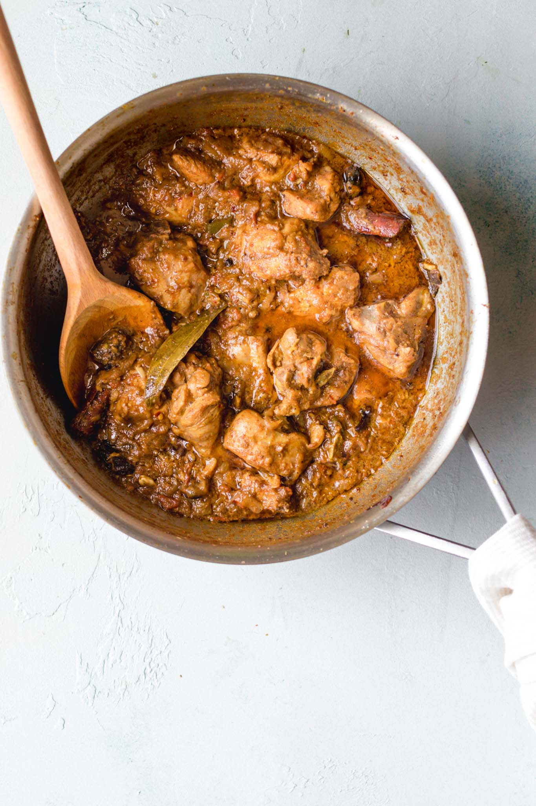
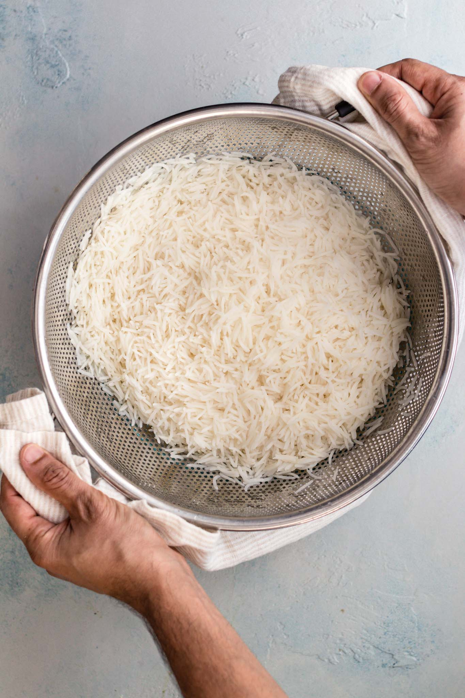
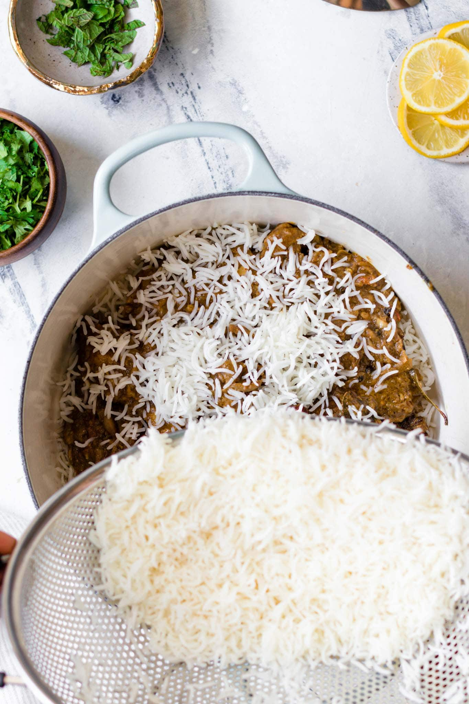
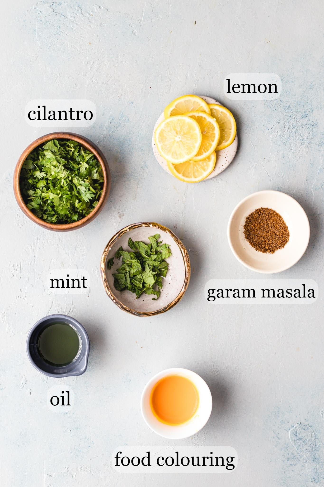
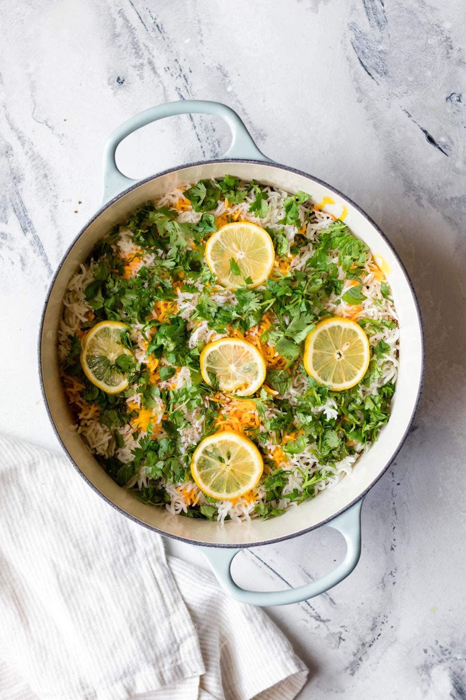
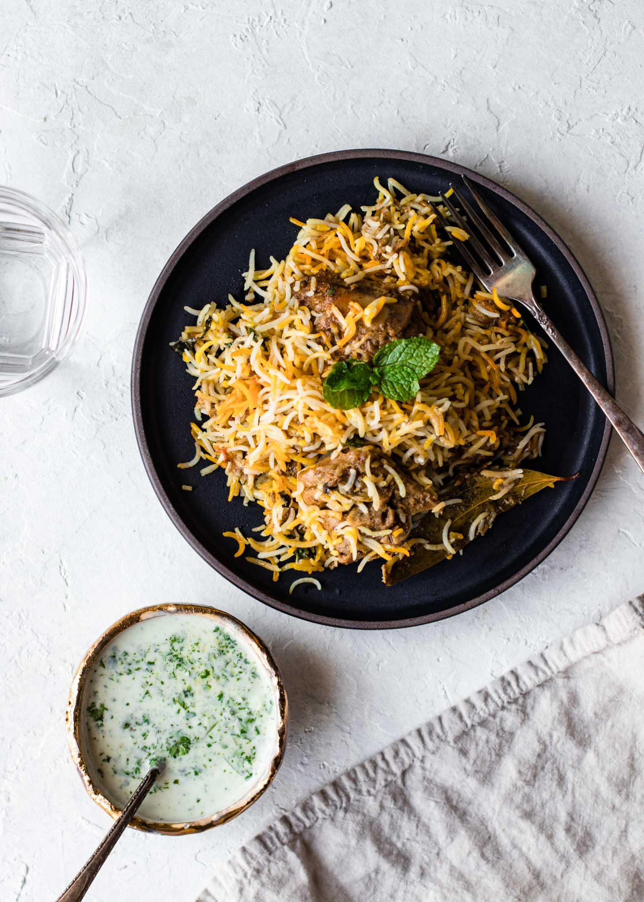

BIRYANI RECIPE
Ingrediant
- oil
- onion
- tomato
- salt
- termic powder
- chili powder
- chili flakes
- chicken
- garlic and ginger paste
- mixed garam masala powder
- rice
- dried bay leaf
- whole mace (javetri)
- cinnamon stick (daarchini)
- whole cloves (loung)
- black cardamom (badi elaichi)
- star anise (baadiyan)
- green cardamom pods (elaichi)
- Roasted cumin seeds or black cumin seeds (shahzeera)
- black peppercorns (kaali mirch)
- fennel (saunf)
- carom seeds (ajwain)
To make biryani masla for this recipe,combine the following ingredients in a spice grinder and process until mostly smooth. Makes ~2 tbsp, which is the exact quantity you’ll need for this recipe.
HOW TO MAKE CHICKEN TENDER
There are 3 comp0nets that make the chicken tender and deeply flavored:
- Marinate the chicken in spices and yogurt. This infuses the chicken with noticeable flavor.
Ideally, marinate overnight or for at least a couple hours, but I tested and found that it's
still very tasty if you marinate just before making the biryani
- Take the chicken out of the fridge before you start preparing the biryani.
Allowing the chicken to come closer to room temperature helps it cook more evenly and
stay tender.
- Lastly, after sautéing the chicken in the hot oil, add water and allow the chicken to
simmer gently, covered, over low heat.
- STEP 1 : PREPARE CHICKEN CURRY.
Prepare the biryani masala (or use store-bought) and marinate the chicken.
Cook the chicken curry. While it's cooking over low heat, prepare the rice.

- STEP 2 : PARBOIL THE RICE
Bring a pot of water to a boil and parboil the rice. Drain and set aside.

- STEP 3 : BRING IT ALL TOGETHER FOR A FINAL STEAM ("DUM")
Layer half of the rice, all of the chicken, and then the remaining rice on top.
Add the finishing touches.
Allow steam to develop, then lower the heat and let the flavors meld.

LAYRING THE BIRYANI
I've kept the layering simple, but you can make it as festive as you'd like by adding sliced tomatoes,
fried onions, or green chili peppers in between or on top of the chicken and rice.

AND THIS IS A FINAL LOOK

